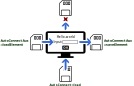
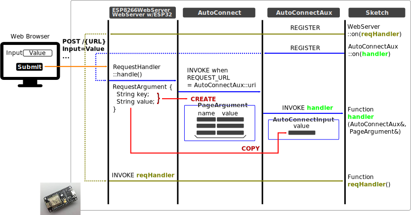
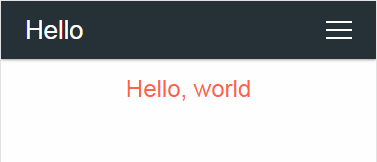

Handling the custom Web pages
Page, Container, Component¶
AutoConnectAux is the container for a custom Web page, AutoConnectElement is the component of a page. AutoConnectElements must be contained in AutoConnectAux object. (ie. they are the elements displayed on the custom Web page.) Then AutoConnect makes an AutoConnectAux to a page.
AutoConnectElements declared in sketch must be programmed to add to AutoConnectAux one after another. Elements are automatically included in AutoConnectAux by AutoConnect if you load it from the JSON document. In either method, it is common to use the function of AutoConnectAux to access an element with a sketch.
Handing AutoConnectElements with the sketches¶
The AutoConnectAux class has several functions to manipulate AutoConnectElements. The functions can add, delete, retrieve elements, and get and set values.
Add AutoConnectElements to the AutoConnectAux object¶
To add AutoConnectElment(s) to an AutoConnectAux object, use the add function.
void AutoConnectAux::add(AutoConenctElement& addon)
void AutoConnectAux::add(AutoConenctElementVT addons)
The add function adds the specified AutoConnectElement to AutoConnectAux. The AutoConnectElementVT type is the std::vector of the reference wrapper to AutoConnectElements, and you can add these elements in bulk by using the list initialization with the sketch.
typedef std::vector<std::reference_wrapper<AutoConnectElement>> AutoConnectElementVT;
button addition will invalid because hello with the same name already exists as AutoConnectText.
AutoConnectAux aux; AutoConnectText text("hello", "hello, world"); AutoConnectButton button("hello", "hello, world", "alert('Hello world!')"); // This is invalid. aux.add({ text, button });
Similarly this, the uniqueness of the name is also necessary within the JSON document
{ "name" : "aux", "uri" : "/aux", "menu" : true, "element" : [ { "name": "hello", "type": "ACText", "value": "hello, world" }, { "name": "hello", "type": "ACButton", "value": "hello, world", "action": "alert('Hello world!')" } ] }
Load all elements from JSON document
If you load all AutoConnectElements from JSON document into AutoConnect, you do not need to sketch the population process of the AutoConnectElements. It is managed by the AutoConnect library automatically.
Get AutoConnectElement from the AutoConnectAux¶
To retrieve an element from AutoConnectAux, use the getElement or getElements function. Normally, the getElement is needed when accessing the value of AutoConnectElement in the sketch.
AutoConnectElement* AutoConnectAux::getElement(const String& name)
T& AutoConenctAux::getElement<T>(const String& name)
AutoConnectElementVT* AutoConnectAux::getElements(void)
The getElement function returns an AutoConnectElement with the specified name as a key. When you use this function, you need to know the type of AutoConnectElement in advance and specify its type <T> to an argument of the getElement. A type of <T> can be specified as follows.
AutoConnectButton& AutoConnectAux::getElement<AutoConnectButton>(const String& name) AutoConnectCheckbox& AutoConnectAux::getElement<AutoConnectCheckbox>(const String& name) AutoConnectElement& AutoConnectAux::getElement<AutoConnectElement>(const String& name) AutoConnectFile& AutoConnectAux::getElement<AutoConnectFile>(const String& name) AutoConnectInput& AutoConnectAux::getElement<AutoConnectInput>(const String& name) AutoConnectRadio& AutoConnectAux::getElement<AutoConnectRadio>(const String& name) AutoConnectSelect& AutoConnectAux::getElement<AutoConnectSelect>(const String& name) AutoConnectSubmit& AutoConnectAux::getElement<AutoConnectSubmit>(const String& name) AutoConnectText& AutoConnectAux::getElement<AutoConnectText>(const String& name)
To retrieve an AutoConnectElement by specifying its type, use the following method.
AutoConnectAux aux; aux.load("SOME_JSON_DOCUMENT"); // Retrieve the pointer of the AutoConnectText AutoConnectText* text = reinterpret_cast<AutoConnectText*>(aux.getElement("TEXT_ELEMENT_NAME")); // Retrieve the reference of the AutoConnectText AutoConnectText& text = aux.getElement<AutoConnectText>("TEXT_ELEMENT_NAME");
The AutoConnectElement type behaves as a variant of other element types. Therefore use cast or template to convert to actual type as above. In the sketch, you access the real type of AutoConnectElement after casting it and storing into the variable.
const String auxJson = String("{\"title\":\"Page 1 title\",\"uri\":\"/page1\",\"menu\":true,\"element\":[{\"name\":\"caption\",\"type\":\"ACText\",\"value\":\"hello, world\"}]}"); AutoConenct portal; portal.load(auxJson); AutoConnectAux* aux = portal.aux("/page1"); // Identify the AutoConnectAux instance with uri AutoConenctText& text = aux->getElement<AutoConnectText>("caption"); // Cast to real type and access members Serial.println(text.value);
You can also use the operator [] of AutoConnectAux as another way to get the desired element. An operator [] is a shortcut for getElement function with the reference casting and makes simplify the sketch code and treats like an array with the elements placed on a custom Web page. Its argument is the name of the element to be acquired similarly to getElement function. In the sketch, by combining the AutoConnectElement::as<T> function with the operator [], you can access the AutoConnectElements reference according to its actual type. For example, the following sketch code returns the same as a reference of AutoConnectText element as the caption.
AutoConnect portal; portal.load(auxJson); AutoConnectAux& aux = *portal.aux("/page1"); AutoConnectText& text1 = aux.getElement<AutoConnectElement>("caption"); AutoConnectText& text2 = aux["caption"].as<AutoConnectText>();
Need cast to convert to the actual type
An operator [] returns a reference of an AutoConnectElement. It is necessary to convert the type according to the actual element type with AutoConnectElement::as<T> function.
AutoConnectButton& AutoConnectElement::as<AutoConnectButton>() AutoConnectCheckbox& AutoConnectElement::as<AutoConnectCheckbox>() AutoConnectElement& AutoConnectElement::as<AutoConnectElement>() AutoConnectFile& AutoConnectElement::as<AutoConnectFile>() AutoConnectInput& AutoConnectElement::as<AutoConnectInput>() AutoConnectRadio& AutoConnectElement::as<AutoConnectRadio>() AutoConnectSelect& AutoConnectElement::as<AutoConnectSelect>() AutoConnectSubmit& AutoConnectElement::as<AutoConnectSubmit>() AutoConnectText& AutoConnectElement::as<AutoConnectText>()
To get all the AutoConnectElements in an AutoConnectAux object use the getElements function. This function returns the vector of the reference wrapper as AutoConnectElementVT to all AutoConnectElements registered in the AutoConnectAux.
AutoConnectElementVT& AutoConnectAux::getElements(void)
Enable AutoConnectElements during the sketch execution¶
AutoConnectElemets have an enable attribute to activate its own HTML generation. Sketches can change the HTMLization of their elements dynamically by setting or resetting the enable value. An element whose the enable attribute is true will generate itself HTML and place on the custom Web page. And conversely, it will not generate the HTML when the value is false.
For example, to enable the submit button only when the ESP module is connected to the access point in STA mode, you can sketch the following:
#include <ESP8266WiFi.h> #include <ESP8266WebServer.h> #include <AutoConnect.h> static const char AUX[] PROGMEM = R"( { "uri" : "/aux", "title" : "Aux.", "menu" : true, "element" : [ { "name": "input", "type": "ACInput", "label": "Input" }, { "name": "send", "type": "ACSubmit", "value": "SEND", "uri": "/send" } ] } )"; AutoConnect portal; AutoConnectAux page; String onPage(AutoConnectAux& aux, PageArgument& args) { AutoConnectSubmit& send = aux["send"].as<AutoConnectSubmit>(); if (WiFi.isConnected()) send.enable = (WiFi.getMode() == WIFI_STA); else send.enable = false; return String(); } void setup() { page.load(AUX); page.on(onPage); portal.join(page); portal.begin(); } void loop() { portal.handleClient(); }
Desirable to set or reset the enable attribute in the page handler
The enable attribute can be set at any time during the sketch execution. The page handler with the AC_EXIT_AHEAD option is sure to handle it.
Loading & saving AutoConnectElements with JSON¶
AutoConnect supports reading the custom Web page definitions written in JSON and also supports loading and saving of AutoConnectAux or AutoConnectElements. In both cases, the target object is a JSON document for AutoConnect. However, it can not save all AutoConnectElements contained in the page as a custom Web page. (ie. AutoConnectAux)

Loading AutoConnectAux & AutoConnectElements with JSON¶
To load a JSON document as AutoConnectAux use the AutoConnect::load function and load the JSON document of each AutoConnectElement using the AutoConnectAux::loadElement function. Although the functions of both are similar, the structure of the target JSON document is different.
The AutoConnect::load function loads the entire AutoConnectAux and creates both the AutoConnectAux instance and each AutoConnectElement instance. A single JSON document can contain multiple custom Web pages. If you write JSON of AutoConnectAux as an array, the load function generates all the pages contained in that array. Therefore, it is necessary to supply the JSON document of AutoConnectAux as an input of the load function and must contain the elements described section JSON document structure for AutoConnectAux.
The AutoConnectAux::loadElement function loads the elements individually into an AutoConnectAux object. The structure of its supplying JSON document is not AutoConnectAux. It must be a JSON structure for AutoConnectElement, but you can specify an array.
// AutoConnectAux as a custom Web page. const char page[] PROGMEM = R"raw( { "title": "Settings", "uri": "/settings", "menu": true, "element": [ { "name": "server", "type": "ACInput", "label": "Server" }, { "name": "set", "type": "ACSubmit", "value": "SET", "uri" : "/set" } ] } )raw"; // Additional AutoConnectElements. const char addons[] PROGMEM = R"raw( [ { "name": "notes", "type": "ACText", "value": "An update period as the below optionally." }, { "name": "period", "type": "ACRadio", "value": [ "30 sec.", "60 sec.", "180 sec." ], "arrange": "vertical", "checked": 1 } ] )raw"; AutoConnect portal; AutoConnectAux* auxPage; // Load a custom Web page. portal.load(page); // Get a '/settings' page auxPage = portal.aux("/settings"); // Also, load only AutoConnectRadio named the period. auxPage->loadElement(addons, "period"); // Retrieve a server name from an AutoConnectText value. AutoConnectText& serverName = auxPage->getElement<AutoConnectText>("server"); Serial.println(serverName.value);
Saving AutoConnectElements with JSON¶
To save the AutoConnectAux or the AutoConnectElement as a JSON document, use the AutoConnectAux::saveElement function. It serializes the contents of the object based on the type of the AutoConnectElement. You can persist a serialized AutoConnectElements as a JSON document to a stream.
// Open a parameter file on the SPIFFS. SPIFFS.begin(); FILE param = SPIFFS.open("/param", "w"); // Save elements as the parameters. auxPage->saveElement(param, { "server", "period" }); // Close a parameter file. param.close(); SPIFFS.end();
The example above saves server and period elements from the AutoConnectAux object as mentioned above to the /param file on SPIFFS. Its JSON document of AutoConnectElements saved by its code looks like this:
[ { "name": "server", "type": "ACInput", "value": "An inputted server name", "label": "Server", "placeholder": "" }, { "name": "period", "type": "ACRadio", "value": [ "30 sec.", "60 sec.", "180 sec." ], "arrange": "vertical", "checked": 2 } ]
Above JSON document can be loaded as it is into a custom Web page using the loadElement function. The loadElement function also loads the value of the element, so the saved value can be restored on the custom Web page.
Custom field data handling¶
A sketch can access variables of AutoConnectElements in the custom Web page. The value entered into the AutoConnectElements on the page is stored in the member variable of each element by AutoConnect whenever GET/POST transmission occurs.
The following diagram shows the flow of the input values of a custom Web page into a sketch and is the basis for actions to manipulate the values of custom Web pages using sketches.

Where to pick up the values¶
A sketch composed of handlers can receive the value of AutoConnectElements entered in a custom Web page after sending, but that handler is different from the page where the value was entered. It is necessary to be aware that can accept the entered values by the next page handler after the transition.
Usually, two ways to retrieve entered values we have. One is to use the ESP8266WebServer::arg (or WebServer::arg for ESP32) function in the on handler attached by ESP8266WebServer (WebServer w/ESP32 also).
#include <ESP8266WiFi.h> #include <ESP8266WebServer.h> #include <AutoConnect.h> static const char addonJson[] PROGMEM = R"raw( { "title": "Hello", "uri": "/hello", "menu": true, "element": [ { "name": "feels", "type": "ACInput", "label": "What's up?" }, { "name": "send", "type": "ACSubmit", "value": "Just it!", "uri": "/feels" } ] } )raw"; ESP8266WebServer webServer; AutoConnect portal(webServer); // Here, /feels handler void feelsOn() { // Retrieve the value of a input-box named "feels" String feel = webServer.arg("feels"); // Echo back the value String echo = "<html><p style=\"color:blue;font-family:verdana;font-size:300%;\">" + feel + String(" and a bold world!</p></html>"); webServer.send(200, "text/html", echo); } void setup() { delay(1000); webServer.on("/feels", feelsOn); // Register /feels handler portal.load(addonJson); // Load a custom Web page portal.begin(); } void loop() { portal.handleClient(); }
An above example is the most simple sketch of handling values entered into a custom Web page. This sketch obtains the string entered in the AutoConnectInput named feels with the /feels handler after page transition, and the AutoConnectInput is an <input type="text" name="feels"> element wrapped in the form as the actual HTML code.
Should be accessed /_ac first
When you actually try the above sketch, there is no a root handler. So the URL that should be accessed first is /_ac concatenated with the local IP address of the esp8266 module.
Another method is effective when custom Web pages have complicated page transitions. It is a way to straight access the AutoConnectElements member value. You can get the AutoConnectElement with the specified name using the getElement function. The following sketch executes the above example with AutoConnect only, without using the function of ESP8266WebServer.
#include <ESP8266WiFi.h> #include <ESP8266WebServer.h> #include <AutoConnect.h> const static char addonJson[] PROGMEM = R"raw( [ { "title": "Hello", "uri": "/hello", "menu": true, "element": [ { "name": "feels", "type": "ACInput", "label": "What's up?" }, { "name": "send", "type": "ACSubmit", "value": "Just it!", "uri": "/feels" } ] }, { "title": "Hello", "uri": "/feels", "menu": false, "element": [ { "name": "echo", "type": "ACText", "style": "color:blue;font-family:verdana;font-size:300%;" } ] } ] )raw"; AutoConnect portal; // Here, /feels handler String feelsOn(AutoConnectAux& aux, PageArgument& args) { // Get the AutoConnectInput named "feels". // The where() function returns an uri string of the AutoConnectAux that triggered this handler. AutoConnectAux* hello = portal.aux(portal.where()); AutoConnectInput& feels = hello->getElement<AutoConnectInput>("feels"); // Get the AutoConnectText named "echo". AutoConnectText& echo = aux.getElement<AutoConnectText>("echo"); // Echo back from input-box to /feels page. echo.value = feels.value + String(" and a bold world!"); return String(""); } void setup() { delay(1000); portal.load(addonJson); // Load custom Web pages portal.on("/feels", feelsOn, AC_EXIT_AHEAD); // Register /feels handler portal.begin(); } void loop() { portal.handleClient(); }
The above example handles in the handler for the values of a custom Web page. An AutoConnect::on function registers a handler for the AutoConnectAux page of the specified uri. The argument of the custom Web page handler is an AutoConnectAux of the page itself and the PageArgument object.
To retrieve the values entered in a custom Web page you need to access the AutoConnectElement of the page that caused the request to this page and to do this, you use the AutoConnect::where function. The AutoConnect::where function returns an uri string of the AutoConnectAux object of the custom Web page that caused the HTTP request.
The where() function is available for only AutoConnectAux.
The AutoConnect::where function is available only for the AutoConnectAux object. It is invalid for HTTP requests from individual pages registered with the on handler of ESP8266WebServer/WebServer for ESP32. In other words, the AutoConnect::where function only returns the last AutoConnecAux page called.
When setting the initial values¶
An AutoConnectAux page is dynamically created by AutoConnect when its uri is requested. The initial value of AutoConnectElements can be set before its page request. It is also possible during loop(). To set the initial value when the page is accessed it needs by the handler of its page.
The AutoConnect::on and AutoConnectAux::on functions register a handler for a custom Web page and also specify when to call that handler. The behavior of the two on functions is the same, only the class and arguments are different.
bool AutoConnect::on(const String& uri, const AuxHandlerFunctionT handler, AutoConnectExitOrder_t order)
void AutoConnectAux::on(const AuxHandlerFunctionT handler, const AutoConnectExitOrder_t order)
Parameter uri specifies an URI of the custom Web page, but an AutoConnectAux object with its URI must be registered with AutoConnect via the AutoConnect::join function beforehand.
AutoConnect::on/AutoConnectAux::on is not ESP8266WebServer::on
The on function for AutoConnect is different from the on function of Arduino core ESP8266WebServer (WebServer for ESP32). You can share the same handler via wrapper, but access to AutoConnectElements is valid only for handlers registered with on function for AutoConnect.
AuxHandlerFunctionT type is a handler declaration using with std::function.
String handler(AutoConnectAux& aux, PageArgument& args)
The handler of the custom Web page has two arguments by a reference of AutoConnectAux and a reference of PageArgument, it returns String. AutoConnect appends the string returned from the handler to the generated HTML. This allows you to add an HTML part before displaying the page.
AutoConnectExitOrder_tspecifies when the handler is called with the following enumeration value.-
- AC_EXIT_AHEAD : Called before AutoConnect generates the HTML of the page. You set the value of AutoConnectElements in the handler then its value will be displayed on the page.
-
- AC_EXIT_LATER : Called after AutoConnect generates the HTML of the page. You can append to HTML generated by AutoConnect.
-
- AC_EXIT_BOTH : Called even before generating HTML and after generated.
The following example is a part of sketch contained the handlers.
// AutoConnect object declarations ACInput(input1); AutoConnectAux aux("/aux", { input1 }); AutoConnect portal; // Pre-declare handlers String initialize(AutoConnectAux&, PageArgument&); String append(AutoConnectAux&, PageArgument&); // Register handlers and launch the portal. aux.on(initialize, AC_AHEAD); aux.on(append, AC_LATER); portal.join(aux); portal.begin(); // Some code here... // The handler called before HTML generating String initialize(AutoConnectAux& aux, PageArgument& args) { AutoConnectInput& input1 = aux.getElement<AutoConnectInput>("input1"); // Set initial value for the input box in a custom Web page. input1.value = "Initial value"; // Nothing appendix for a generated HTML. return String(); } // The handler called after HTML generated String append(AutoConnectAux& aux, PageArgument& args) { // Append an HTML return String("<p>This text has been added.</p>"); }
How you can reach the values¶
AutoConnectSubmit uses the POST method to send HTTP requests. A value of AutoConnectInput sent to the ESP8266 or ESP32 with POST is stored in the request body of the HTTP request:
POST /feels HTTP/1.1 Host: ESP8266_IP_ADDRESS name1=value1&name2=value2&name3=value3
/hello page is a custom Web page of AutoConnectAux which has an input box named "input1". Another /echo page is a page handler for ESP8266WebServer, which uses the ESP8266WebServer::send function to echo back the value of an input1 as an http response.
ESP8266WebServer server; AutoConnect portal(server); ACInput(input1, "", "INPUT"); ACSubmit(send, "HELLO", "/echo"); AutoConnectAux aux("/hello", { input1, send }); server.on("/echo", []() { String echo = server.arg("input1"); Serial.println(echo); server.send(200, "text/plain", echo); }); portal.join(aux); portal.begin();
Also, you can choose another way to access arguments without going through the ESP8266WebServer class. The PageArgument object of the custom Web page handler argument is a copy of the arg object of the ESP8266WebServer class. Either of these methods is a simple and easy way to access parameters in custom Web page handlers. However, if you need to access from outside of the handler to the value of AutoConnectElements, you need to accomplish it using with the AutoConnectAux::getElement function. The following sketch code replaces the above example with JSON and PageArgument, and its behaves is equivalent basically to the above sketch.
const static char auxPage[] PROGMEM = R"raw( [ { "title":"Hello", "uri":"/hello", "menu":true, "element":[ { "name":"input1", "type": "ACInput", "label": "INPUT" }, { "name":"send", "type":"ACSubmit", "value":"HELLO", "uri":"/echo" }] }, { "title":"Echo", "uri":"/echo", "menu":false, "element":[ { "name":"echo", "type":"ACText" }] } ] )raw"; AutoConnect portal; portal.load(auxPage); portal.on("/echo", [](AutoConnectAux& aux, PageArgument& args) { AutoConnectText& ac_echo = aux.getElement<AutoConnectText>("echo"); ac_echo.value = args.arg("input1"); return String(); }); portal.begin();
Overwrite the AutoConnectElements¶
Sketches can update the attributes of AutoConnectElements with two approaches. A one is to assign directly to the attributes of a member variable of its element. The other is to overwrite them with loading the element by AutoConnectAux::loadElement.
The elements for attributes described in the JSON document for AutoConnectElements overwrites the member variables of the target AutoConnectElements. However, AutoConnectAux::loadElement keeps the member variables unchanged if there is no element in the JSON document. This overwriting behavior is the same for the AutoConnect::load function.
For example, the combination of the sketch and JSON document as follows updates only the style while keeping Caption (ie. "Hello, world") as AutoConnectText value.
External JSON document for the below sketch to modify the text style.
{ "name" : "Caption", "type" : "ACText", "style": "text-align:center;font-size:24px;font-family:'Impact','Futura',sans-serif;color:tomato;" }
The sketch (a part of code), load above JSON.
ACText(Caption, "Hello, world"); AutoConnectAux helloPage("/hello", "Hello", true, { Caption }); AutoConnect portal; String onHello(AutoConnectAux& aux, PageArgument& args) { aux.loadElement(JSON); return String(); } void setup() { helloPage.on(onHello); portal.join(helloPage); portal.begin(); } void loop() { portal.handleClient(); }
It's shown as like:
Check data against on submission¶
By giving a pattern to AutoConnectInput, you can find errors in data styles while typing in custom Web pages. The pattern is specified by regular expression.2 If the value during input of AutoConnectInput does not match the regular expression specified in the pattern, its background color changes to pink. The following example shows the behavior when checking the IP address in the AutoConnectInput field.
{ "title" : "Page-1", "uri" : "/page1", "menu" : true, "element" : [ { "name" : "Server", "type" : "ACInput", "label": "Server address", "pattern": "^(([0-9]|[1-9][0-9]|1[0-9]{2}|2[0-4][0-9]|25[0-5])\\.){3}([0-9]|[1-9][0-9]|1[0-9]{2}|2[0-4][0-9]|25[0-5])$" } ] }
If you are not familiar with regular expressions, you may feel that description very strange. And matter of fact, it is a strange description for those unfamiliar with formal languages. If your regular expression can not interpret the intended syntax and semantics, you can use an online tester. The regex101 is an exceptional online site for testing and debugging regular expressions.
 Validate input data¶
Validate input data¶
The pattern attribute of AutoConnectInput only determines the data consistency on the web browser based on the given regular expression. In order to guarantee the validity of input data, it is necessary to verify it before actually using it.
You can validate input data from AutoConnectInput using the isValid function before actually processing it. The isValid function determines whether the value currently stored in AutoConnectInput matches the pattern.
Convert data to actually type¶
The values in the AutoConnectElements field of the custom Web page are all typed as String. A sketch needs to be converted to an actual data type if the data type required for sketch processing is not a String type. For the typical data type conversion method, refer to section Tips for data conversion.
Transitions of the custom Web pages¶
Scope & Lifetime of AutoConnectAux¶
AutoConnectAux and AutoConnectElements must live while the custom Web pages are available. The implementation of the custom Web page inherits from requestHandler driven from ESP8266WebServer (WebServer for ESP32), so the instance of AutoConnectAux and AutoConnectElements must exist for the duration of effect of handleClient. The following example is incorrect for manipulating custom Web pages. Its AutoConnectAux instance will be destructed at the exit of the setup().
#include <ESP8266WiFi.h> #include <ESP8266WebServer.h> #include <AutoConnect.h> static const auxPage[] PROGMEM = R"raw( { "title": "Page-1", "uri": "/page1", "menu": true, "element": [ { "name":"Server", "type":"ACText", "label":"Server address" } ] } )raw"; AutoConnect portal; void setup() { // This declaration is wrong. AutoConnectAux aux; aux.load(auxPage); portal.join(aux); portal.begin(); } void loop() { portal.handleClient(); }
The URI of the custom Web pages¶
The transition of the custom Web page follows the URI of the page, but the ESP8266WebServer class does not know the URI of an AutoConnectAux page. (Registering a custom Web page does not use the ESP8266WebServer::on/WebServer::on function.) Therefore ESP8266WebServer class does not detect its URI access. If you want to detect an http request to AutoConnectAux's custom Web page, you need to register its URI with the AutoConnectAux::on function.
In addition to this, there are restrictions in the handler for the custom Web page as shown in the following section.
Limitations¶
The custom Web pages handler has the following limitations.
-
Do not send HTTP responses from the handler.
If the handler returns its own response, the custom Web page will be lost.
-
Use AutoConnectSubmit whenever possible.
AutoConnect will hold the values of a custom Web Page is sent by AutoConnectSubmit.
-
Can not handle the custom Web pages during a connection is not established yet.
During the connection attempt, the web browser of the client will send a probe for a captive portal. Its request will cause unintended custom Web page transitions.
-
Can not place URI of the custom Web pages to AUTOCONNECT_URI.
AutoConnect will not work if you place a custom Web page to AUTOCONNECT_URI.
-
Can not use the element named SUBMIT.
You can not use 'SUBMIT' as the element name of AutoConnectElements in a custom Web page that declares the AutoConnectSubmit element. (Case sensitive ignored) AutoConnect does not rely on the
input type=submitelement for the form submission and uses HTML form element submit function instead. So, the submit function will fail if there is an element named 'submit' in the form.
Do not handle for the same page
Do not duplicate AutoConnect::on with ESP8266WebServer::on (also WebServer::on) for the same custom web page.
-
The valid scope of the name is within an AutoConnectAux. ↩
-
Regular expression specification as a pattern of AutoConnectInput is JavaScript compliant. ↩